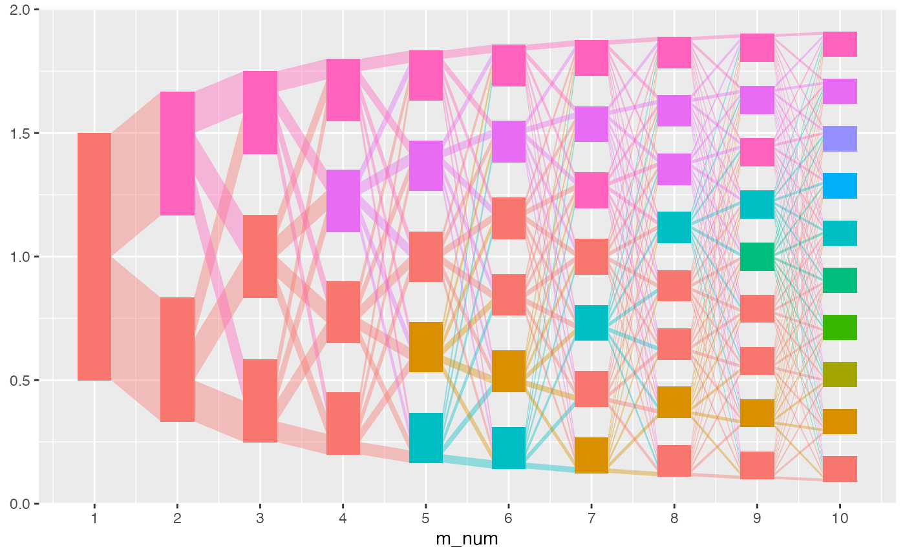
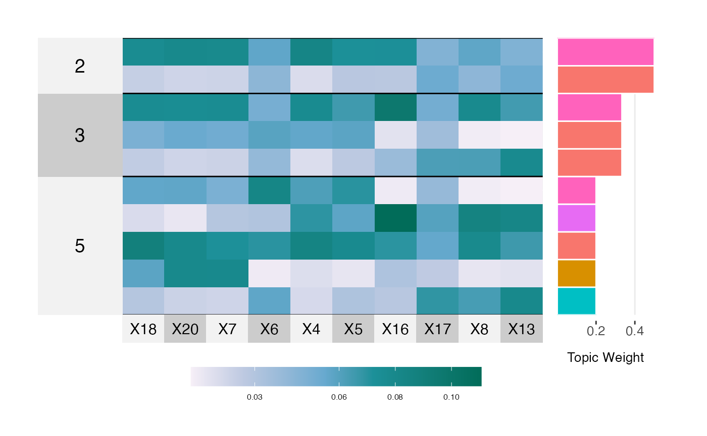
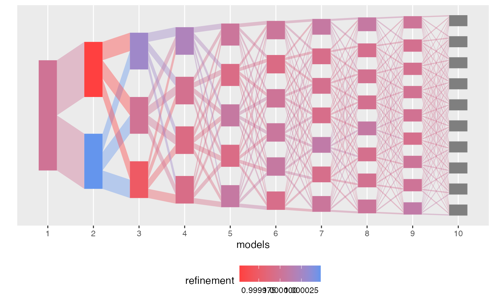

basic-alignment
basic-alignment.RmdThis is mainly a way to test our code without having a full testthat workflow.
library(alto)
#>
#> Attachement du package : 'alto'
#> L'objet suivant est masqué depuis 'package:stats':
#>
#> weights
library(purrr)
library(stringr)
set.seed(123)First fit 10 models to toy data.
data <- rmultinom(20, 5000, rep(0.1, 500))
lda_params <- setNames(map(1:10, ~ list(k = .)), 1:10)
lda_models <- run_lda_models(data = data, lda_varying_params_lists = lda_params)
#> Using default value 'VEM' for 'method' LDA parameter.
#> Using default value 'VEM' for 'method' LDA parameter.
#> Using default value 'VEM' for 'method' LDA parameter.
#> Using default value 'VEM' for 'method' LDA parameter.
#> Using default value 'VEM' for 'method' LDA parameter.
#> Using default value 'VEM' for 'method' LDA parameter.
#> Using default value 'VEM' for 'method' LDA parameter.
#> Using default value 'VEM' for 'method' LDA parameter.
#> Using default value 'VEM' for 'method' LDA parameter.
#> Using default value 'VEM' for 'method' LDA parameter.
result <- align_topics(lda_models)
result
#> # An alignment: 10 models, 55 topics:
#> # A tibble: 6 x 8
#> m m_next k_LDA k_LDA_next document_mass weight norm_weight fw_weight
#> <fct> <fct> <int> <int> <dbl> <dbl> <dbl> <dbl>
#> 1 1 2 1 1 250. 0.500 1 0.500
#> 2 1 2 1 2 250. 0.500 1 0.500
#> 3 2 3 1 1 83.3 0.167 0.500 0.333
#> 4 2 3 1 3 83.3 0.167 0.500 0.333
#> 5 2 3 1 2 83.3 0.167 0.500 0.333
#> 6 2 3 2 1 83.3 0.167 0.500 0.333
#> # … with 324 more rows
plot(result)
plot_beta(result)
compute_refinement_scores(weights(result))
#> # A tibble: 55 x 3
#> m k_LDA refinement_score
#> <fct> <int> <dbl>
#> 1 1 1 0.00000276
#> 2 2 1 0.00000276
#> 3 2 2 0.00000276
#> 4 3 1 0.00000551
#> 5 3 2 0.00000551
#> 6 3 3 0.00000551
#> 7 4 1 0.0000165
#> 8 4 2 0.0000165
#> 9 4 3 0.0000165
#> 10 4 4 0.0000165
#> # … with 45 more rowsSome more variants of plot_beta.
plot_beta(result, "all", n_features = 20, bottom.label.text.size = 3)

plot_beta(result, "last", n_features = 10)
result <- align_topics(lda_models, "all")
result
#> # An alignment: 10 models, 55 topics:
#> # A tibble: 6 x 7
#> m m_next k_LDA k_LDA_next document_mass weight norm_weight
#> <fct> <fct> <int> <int> <dbl> <dbl> <dbl>
#> 1 1 10 1 1 50.0 0.100 0.111
#> 2 1 10 1 10 50.0 0.100 0.111
#> 3 1 10 1 2 50.0 0.100 0.111
#> 4 1 10 1 3 50.0 0.100 0.111
#> 5 1 10 1 4 50.0 0.100 0.111
#> 6 1 10 1 5 50.0 0.100 0.111
#> # … with 1314 more rows
result <- align_topics(lda_models, "consecutive", method = "transport")
result
#> # An alignment: 10 models, 55 topics:
#> # A tibble: 6 x 8
#> m m_next k_LDA k_LDA_next document_mass weight norm_weight fw_weight
#> <fct> <fct> <int> <int> <dbl> <dbl> <dbl> <dbl>
#> 1 1 2 1 1 250. 0.500 1 0.500
#> 2 1 2 1 2 250. 0.500 1 0.500
#> 3 2 3 1 1 127. 0.254 0.762 0.508
#> 4 2 3 1 3 25.0 0.0499 0.150 0.0998
#> 5 2 3 1 2 98.1 0.196 0.588 0.392
#> 6 2 3 2 1 39.7 0.0793 0.238 0.159
#> # … with 324 more rows
plot(result)
plot_beta(result)